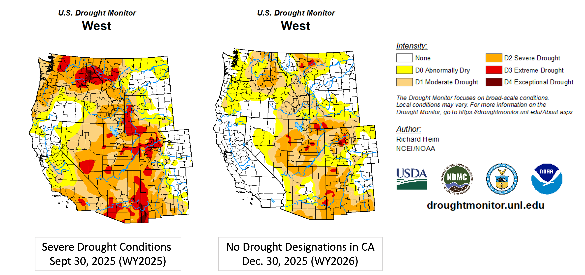

By the end of the water year in September 2025, xx% of Washington, Oregon, and Idaho was experiencing at least moderate drought conditions (D1 or higher levels of the U.S. Drought Monitor index), while California levels were much lower at xx%, and down from a high of nearly 100% in 2022. Where water scarcity existed, it generally was not severe: over xx% of the Pacific West experienced moderate drought conditions (D1) or better.

Drought conditions obtained from Drought Monitor (https://droughtmonitor.unl.edu) and National Integrated Drought Information System (https://www.drought.gov/).